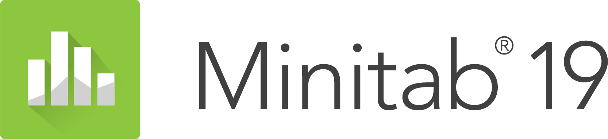

Aniket Amar Thopte
■ Graduate Student at Engineering/Industrial Management with an undergraduate degree in Mechanical Engineering. Looking for full-time position starting JUNE-2021 & willing to relocate according to company's location.
Highly motivated Industrial Engineer, interested to work in following fields:
♦ Supply Chain & Logistics Domain | Forecasting - Supply / Demand Planning.
♦ Total Quality Management | Lean Manufacturing.
♦ Process Engineering | Production Control Systems.
♦ Analyst - Business Operations, Supply Chain.
⦿ My primary goal is to team up with people having innovative mindset to come up with ideas, strategies and products that put a significant impact towards the future industry.
⦿ Being ambitious to overcome challenges, I embrace precision along with quality and always strive to achieve both self as well as team-oriented success.
Experience
Graduate Teaching Assistant
Charlotte, NC, United States
♦ Teaching Assistant: EMGT-5170 Total Quality Systems | SEGR-2106 Engineering Economic Analysis
♦ Responsible for grading assignments, tests, project evaluation and assisting professor as per requirement
♦ Lead instruction, discussion, Q & A sessions, providing support, as appropriate, for students with coursework difficulties
♦ Topics covered: Capital Investment Analysis in a technological business environment, Project Evaluation Techniques based on different conditions, Budgeting & Decision-Making
♦ Follow and uphold school rules and standards, ensuring all activities, services, and communications conducted
♦ Participate in meetings and events, and use all communication channels effectively to support the smooth running of the coursework for the semester
Supply Chain & Quality Assurance Intern
Charlotte, NC, United States
♦ Facilitated & coordinated ocean freight including but not limited to tracking, expediting, last mile delivery of the products imported from China
♦ Optimized shipping & transportation by 20% by reducing 12 days of ocean freight time from China to North Carolina & provided creative solutions for multiple logistical bottlenecks
♦ Worked with the Customs Brokerage (Charlotte-NC) & Director of Operations to identity and implement cost savings opportunities across the supply chain
♦ Tracked, consolidated & drove change through data analysis with recommendations for improvements and changes (Investor’s Data Analysis for business impact & revenue optimization)
♦ Solved challenging ad hoc problems that require collecting both qualitative and quantitative insights and providing recommendations
Under-Graduate Intern
Pune, Maharashtra, India
♦ Managed inventory (inventory count, processed order data collection) & reorder point of materials based on manufacturing schedules
♦ Worked in cross-functional teams (material procurement to final product dispatch)
♦ Performed maintenance & root cause analysis as needed for managing ongoing manufacturing operations
♦ Assessed & incorporated design-for-manufacturability elements into packaged drinking water container designs
Team Member, Manufacturing & Design Department
Pune, Maharashtra, India
♦ Participated in team activities, established task priorities, scheduling & tracking project assignments, while providing the appropriate guidance to cross-functional team members
♦ Responsible for Manual Control of Robots during the competitions
♦ Worked in Manufacturing Department: Learned the basic manufacturing skills & techniques
♦ Assisted in market research & inventory control
♦ Participated twice in ABU Robocon (Asia-Pacific Broadcasting Union Robocon India Nationals) & secured top 15 position
Education
University of North Carolina at Charlotte
GPA: 3.9 / 4.0
Relevant Coursework :
- Forecasting Techniques & Methodologies | Business Intelligence & Analytics
- Lean Supply Networks | Logistics Engineering & Management
- Total Quality Control | Production Control Systems
♦ Activities & Societies: Sigma Xi - The Scientific Research Honor Society | UNC Charlotte E-Sports Club
University of Pune
GPA: 3.7 / 4.0
Relevant Coursework : Industrial Engineering | Advanced Manufacturing Processes | Metrology & Quality Control
♦ Activities & Societies: P.E.S. Modern College of Engineering Robotics Club | Mechanical Engineering Student Association (MESA)
Skills
-

-

-

-

-

-

- 
- LEAN 6σ Green Belt Certified: Quality Control & Process Improvement | DMAIC | Control Charts | SPC
- Operations Management: Project Management (initiation, planning, execution)
- Knowledge of ISO 9001: 2015 / 22000 / 14000
- Forecasting Techniques: Demand/Supply/Order Quantity/Sales Forecasting, Statistical Quantitative Forecasting
- Data Analytics: Analyzing data for data-driven decision making (DDDM)
- Buiding robust and interactive dashboards for data-driven insights using Tableau & Power BI
Projects
Defect Analysis of Electric Circuit Boards using Statistical Process Control (SPC) for Total Quality Management
Analyzed Electric Circuit Board-Defect Dataset for Statistical Process Control (SPC) using various Quality Tools & Techniques for the enhancement of Quality Control in a Manufacturing Setting.
Univariate Forecasting Model Using Seasonal Auto Regressive Integrated Moving Average (SARIMA)
Forecasting Univariate Models Using ARIMA. Applications: Order Quantity/Demand/Supply/Sales Forecasting, Statistical Quantitative Forecasting.
A Case Study for Large Scale Vehicle Routing
In this project two different route planning algorithms were tested, compared and analyzed for their performance when applied in real road networks.